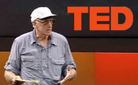

A few people have considered the leading zeros on my dates to be typos, but I assure you they are not. They stem from an idea thought-up by the Long Now Foundation.
They are an organization dedicated to thinking in the very long term. Human innovation started roughly 10,000 years ago with the domestication of animals and the planting of crops. So any challenges the Long Now foundation puts forth are aimed at looking 10,000 years into the future. The organization was started in 01996 with the idea of combating the ideology of “faster and cheaper” with “longer and better”. They set about with several projects, all deal with factors in the far future. Their work as influenced me to rethink much of what I do on a daily basis, how I perceive saving my data for the future and how I interact with objects today.
Y10K problem
One project the Long Now Foundation started was the Clock of the Long Now. This a physical clock which promotes long term thinking and takes 10,000 years to make a single revolution. The clock ticks once a year.
The first prototype has been built and started ticking on December 31st, 1999. It is currently located at the Science Museum in London. The next step was to select a location for the actual 10,000 year clock. The site needed to also last the 10,000 year, so many different requirements where specified. Steward Brand gave a talk at the TED conference about the Long Now and their missions and goals. He discusses the issues of location and the thought process that went into the Clock of the Long Now. More information about the Clock of the Long Now can be found on wikipedia.
To help stress to everyone else the time scales they are considering, they prefix all their dates with a leading zero. The effect is that, it isn’t two in 2000, it is 2000 in 10,000—we still have a long way to go! They argue we were too short sighted in solving the 2Yk problem by moving from a 2 character date to a 4 character date. All that’s done is delayed the same problem until Y10K in another 08000 years.
I took-up their little challenge and I’m prefixing all of my dates with a leading zero. It makes me more aware of how small the year 02,009 really is in the larger scope of humanity.
Thinking in the long term
In Danny Hillis’ 01995 essay to wired about the Clock of the Long Now, he mentions other long term thinkers. He says:
I think of the oak beams in the ceiling of College Hall at New College, Oxford. Last century, when the beams needed replacing, carpenters used oak trees that had been planted in 1386 when the dining hall was first built. The 14th-century builder had planted the trees in anticipation of the time, hundreds of years in the future, when the beams would need replacing. Did the carpenters plant new trees to replace the beams again a few hundred years from now?
This is an exercise in long term sustainability. Steward Brand said the same thing in his TV series and book, “How Buildings Learn”. He goes to College Hall to see these giant oak beams. Insects had destroyed the previous beams and the college was at a loss of where to acquire giant oak beams in this day and age. They asked the forester if he knew of a place. The forester not only tended to the campus lands, but was also in charge of keeping alive the knowledge of the 500+ year old oak grove. Foresters passed down the tidbit of knowledge, “You don’t cut them oaks. Them’s for the College Hall.”
The story is attributed to Gregory Bateson. After the meme took off, the University archivist looked back and found the incident and had this to say:
It is not the case that these oaks were kept for the express purpose of replacing the Hall ceiling. It is standard woodland management to grow stands of mixed broadleaf trees e.g., oaks, interplanted with hazel and ash. The hazel and ash are coppiced approximately every 20-25 years to yield poles. The oaks, however, are left to grow on and eventally, after 150 years or more, they yield large pieces for major construction work such as beams, knees etc.
It demonstrate generic long term thinking about renewability. It’s a wonderful example of being part of something much larger than your own lifetime. Those foresters were planting the seeds not to be reaped in their lifetime, but in generations later.
Long Bets
Another project by the Long Now Foundation is Long Bets. It is a website designed for accountable predictions. The way it works is that someone makes a prediction that won’t conclude for a minimum of another 2 years and a wager. Another party will accept it assuming the opposite and put up the same amount of money. No matter who wins the bet, the wager goes to a charity of the winner’s choice.
For instance, there is a 10 year bet by Warren Buffett and challenged by Protege Partners, LLC for $1,000,000 that “Over a ten-year period commencing on January 1, 2008, and ending on December 31, 2017, the S & P 500 will outperform a portfolio of funds of hedge funds, when performance is measured on a basis net of fees, costs and expenses.” In 02017 we’ll find out the results, but as of writing 76% side with Mr. Buffett’s prediction.
The list of possibilities is a fascinating look into future predictions and the wisdom of crowds to gauge interest and current feelings of the probability. By framing the bets only in the long term we are forced to think in different ways and consider more variables then we normally might.
Rosetta Project
It is predicted that 50–90% of the world’s languages will disappear with no significant documentation in the next century. The Rosetta Project is an attempt to collect and record as many languages as possible that are currently in existence, while they are still around.
The way these languages are being recorded is on a beautiful double-sided disk of nickel. Nickel was chosen because it is immune to water damage, it can withstand very high temperatures without damaging the engraving and is unaffected by electromagnetic radiation. Side one of the disk contains a list of over 1,500 human languages assembled as of 02008. The flip-side contains over 13,000 pages microetched onto the surface and can be clearly read with 650X magnification.
How to store these texts was an interesting conundrum because they did not want to covert the text into a binary format, because then they would need to be decoded and the knowledge to do so in 10,000 years might be long forgotten. Instead, they opted for the very basic analog scaling down of the text making it platform and technology agnostic. This is the microfiche of the 21st century.
Lost and Found
Danny Hillis argues that the only things that last have of little value or are hidden. The reason Stonehenge and the Pyramids are still in place is because there is no monetary value in their structures so no one felt the need to destroy them. The worry about a 10,000 year clock is that if it is neglected and no one cares for it, it will become unimportant and people won’t feel guilty scraping it for parts. If it does become important, then it is something worth fighting for and it will be destroyed out of spite.
Conversely, objects of extreme age also exist because they were lost. He argues that the Dead Sea Scrolls lasted 2000 years is because no one knew they existed, now that they have been found, he estimates they won’t be around in 200.
The Long Now foundation is a fascinating group of thinkers, projects and ideas. I highly recommend digging deeper into their website, articles and books to get a further understanding of our temporality. We look around at our world and we see a vast diversity in culture, language, music and society, but humans have only been on this Earth a tiny fraction of the overall lifespan of this planet. Everything we assume as permanent is merely a temporary blip when you begin to stretch the timescale to geological levels. We need to begin to think about projects on this scale.